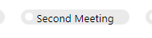

The Sales guide section tab
When you create a sale and select a sale type for which a sales guide has been defined, the Sales guide section tab is displayed with the activity list underneath.
The buttons for the different stages are displayed at the top of the section tab. The appearance of the buttons changes as you complete the stages in the sales guide:
| Stage | Icon |
|---|---|
| Completed stage |  |
| Current stage |  |
| Future stage |  |
Each stage in the sales guide contains different follow-ups and/or documents, which are shown in the lower half of the section tab. They are listed in two columns, Follow-ups and Documents. If you click the button for a stage, the lower half of the section tab shows which activities belong to the stage.
Click Create next to the follow-ups and documents to create them. You can also click the title of the follow-up or document to create it.

Tip
All follow-ups and documents you have created for a sales guide are also displayed on the Activities section tab in the Sale screen. This provides you with an overview of all activities linked to the sale - both completed and uncompleted activities.
Once a follow-up or document has been created, you can subsequently delete or edit it by right-clicking the title of the follow-up/document and selecting from the menu that appears. Equally, you can also create a new follow-up or a new document of the same type.